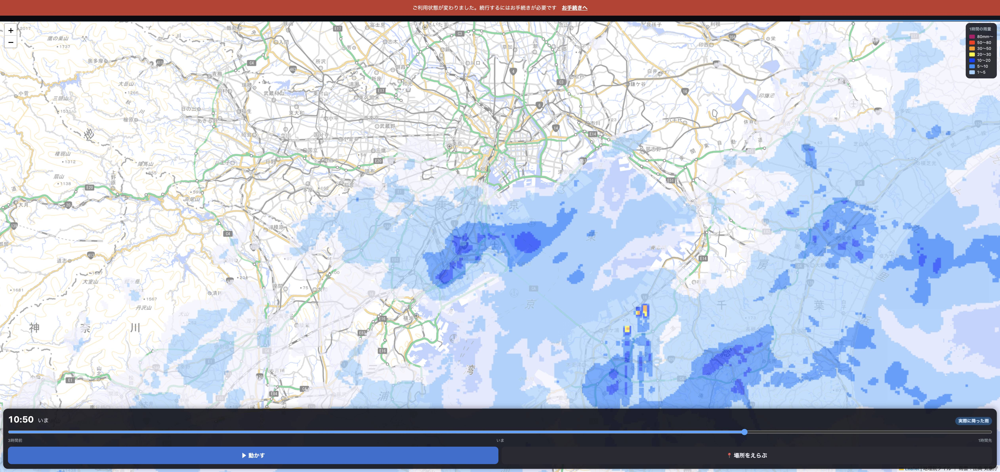

雨雲レーダー、できました
アプリの上のタブに「🌧 雨雲」が増えます。
実際の画面

今朝10:50の実データ。房総のあたりに強い雨（黄色）が出ています
できること
| やること | どうなるか |
|---|
| つまみを動かす | 3時間前 → いま → 1時間先 まで、5分きざみで雨雲が動く（全48コマ） |
| 「▶ 動かす」 | ぱらぱら漫画のように自動で流れる |
| 「📍 場所をえらぶ」 | 下から出てくる |
| └ いまの場所 | GPSでいる場所へ飛ぶ（赤い点が付く） |
| └ よく行くところ | 羽田空港・東京駅・新宿・渋谷・品川・銀座 |
| └ 地名で探す | 「六本木」と打つと港区六本木へ。4,443の町名から探せる |
| 閉じてまた開く | 最後に見ていた場所から始まる |
予想の部分は色分けで分かります。実際に降った雨は青いラベル、この先の予想は黄色いラベルが出ます。
作りながら見つけて直したこと
これまで使っていた海外の地図が有料になっていました
乗り場マップも同じ地図を使っていました。そちらにも透かしが出ていたので、一緒に直してあります。
まとめ
- 雨雲は気象庁のデータ。鍵も費用もかかりません。
- 場所は現在地・よく行くところ・地名検索の3通りで選べます。
- 最後に見た場所を覚えます。
- テスト1180件すべて通っています（雨雲用に14件追加）。
いま dev です。ご自身の端末で触ってみて、よければ「本番へ」と言ってください。